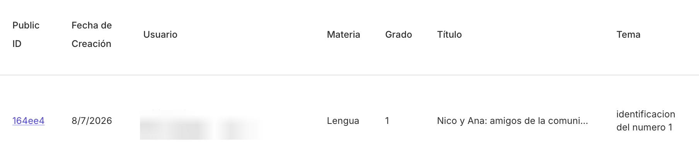

In Argentine primary school there are no subjects from the teacher's point of view; there are grades. The product asked for a subject when creating a grade. A teacher with one 3rd grade class teaching Language and Math ended up with two "3rd grades" in her list. In the interface it looked like duplication. In the data model it was working as designed.
The bug reports pointed at the grade list. Session replays and the data model pointed elsewhere: the coupling of subject to grade at creation time. Fixing the list would have hidden the symptom.

Written as problem / proposal / considerations / decision, the same format I use for every product proposal (an earlier example: the January redesign of generating without a course created). The proposal: the grade form stops asking for subject (and student count); subject is asked at planning time, every time.
Deployed June 17, 2026. Grades are now unique per real-world group. Subject lives where the teacher actually thinks about it: at the moment of planning.